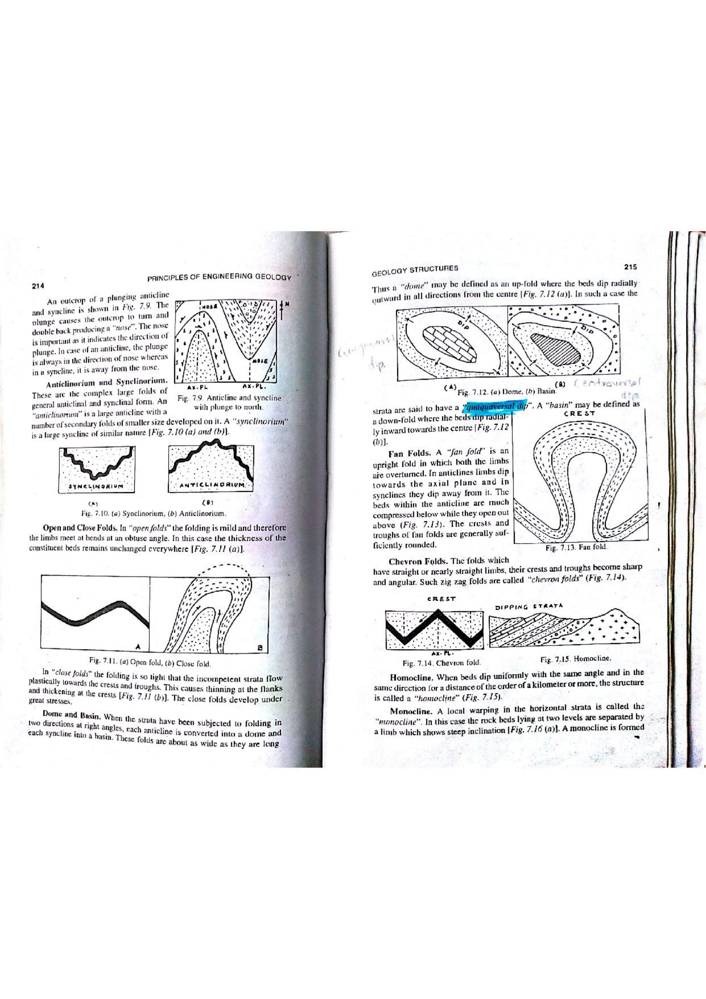

When stratified rock sequences undergo compressional deformation, individual layers respond according to their intrinsic rheological properties (viscosity, yield strength, and ductility). If layers of strongly differing competencies (e.g., massive sandstones alternating with incompetent shales or evaporites) are folded together, the uniform geometric continuity across layers breaks down, producing disharmonic folding.
Where $\alpha$ is the limb dip, $t_0$ is the thickness at the hinge, and $t_\alpha$ is the orthogonal thickness along the limb.

| Ramsay Class | Dip Isogon Convergence | Orthogonal Thickness ($t_\alpha$) | Axial Thickness ($T_\alpha$) | Physical Deformation Mechanism |
|---|---|---|---|---|
| Class 1A | Strongly Convergent | Thickened limbs, thinned hinges | Variable | Extreme buckling / stretching of hinges |
| Class 1B (Parallel) | Convergent toward inner arc | $t_\alpha = t_0$ (Strictly Constant) | Decreases on limbs | Flexural slip / pure buckle folding |
| Class 1C | Weakly Convergent | Modest limb thinning | Decreases on limbs | Buckling modified by ductile flattening |
| Class 2 (Similar) | Strictly Parallel | $t_\alpha = t_0 \cos \alpha$ (Thick hinges, thin limbs) | $T_\alpha = \text{Constant}$ | Passive shear folding / ductile plastic flow |
| Class 3 | Divergent toward inner arc | Extreme limb thinning | Increases on limbs | Very incompetent layer between competent units |
| Diagnostic Feature | Parallel Fold (Class 1B) | Similar Fold (Class 2 / Disharmonic) |
|---|---|---|
| Orthogonal Thickness ($t_\alpha$) | Constant everywhere ($t_\alpha = t_0$) | Variable: Thinned limbs, thickened hinges ($t_\alpha = t_0 \cos \alpha$) |
| Axial Plane Thickness ($T_\alpha$) | Decreases away from hinge | Strictly constant ($T_\alpha = t_0$) |
| Curvature with Depth | Dies out vertically; space problems at core | Maintains identical shape indefinitely along axial surface |
| Dominant Mechanism | Flexural slip along competent bedding planes | Ductile plastic flow / passive shear folding |
| Metamorphic Grade | Low grade / unmetamorphosed upper crust | Medium-to-high grade metamorphic terranes (schists/gneisses) |